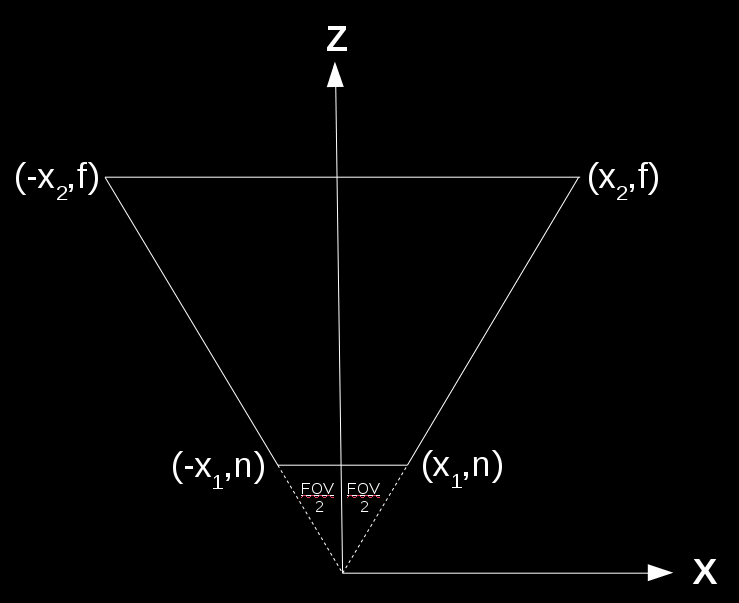
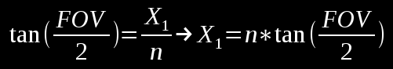
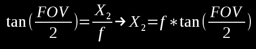
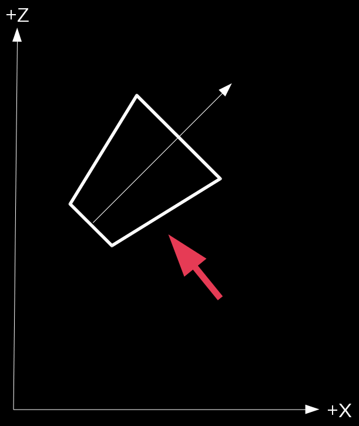
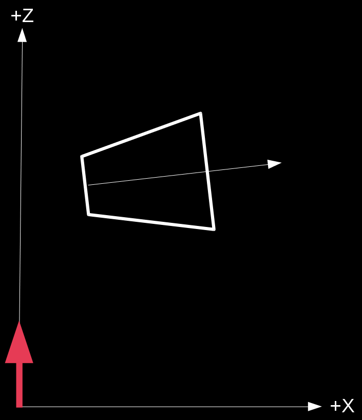

Background
Let's take a close up look of the shadow from tutorial 47:

As you can see, the qaulity of the shadow is not high. It's too blocky. We've touched on the reason for that blockiness at the end of tutorial 47 and referred to it as Perspective Aliasing which means a large number of pixels in view space being mapped to the same pixel in the shadow map. This means that all these pixels will either be in shadow or in light, contributing to the sense of blockiness. In other words, since the resolution of the shadow map is not high enough it cannot cover the view space adequately. One obvious way to deal with this is to increase the resolution of the shadow map but that will increase the memory footprint of our app so it may not be the best course of action.
Another way to deal with this problem is to notice that shadows closer to the camera a far more important in terms of quality than shadow of objects that are far away. Distant objects are smaller anyway and usually the eye focuses on what happens close by, leaving the rest as a "background". If we can find a way to use a dedicated shadow map for closer objects and a different shadow map for distant objects then the first shadow map will only need to cover the a smaller region, thus decreasing the ratio that we discusses above. This, in a nutshell, is what Cascaded Shadow Mapping (a.k.a CSM) is all about. At the time of writing this tutorial CSM is considered one of the best ways to deal with Perspective Aliasing. Let's see how we can implement it.
From a high level view we are going to split the view frustum into several cascades (since it doesn't need to be just two as in the previous example). For the purpose of this tutorial we will use three cascades: near, middle and far. The algorithm itself is pretty generic so you can use more cascades if you feel like it. Every cascade will be rendered into its own private shadow map. The shadow algorithm itself will remain the same but when sampling the depth from the shadow map we will need to select the appropriate map based on the distance from the viewer. Let's take a look at a generic view frustum:

As usual, we have a small near plane and a larger far plane. Now let's take a look at the same fustum from above:

The next step is to split the range from the near plane to the far plane into three parts. We will call this near, middle and far. In addition, let's add the light direction (the arrow on the right hand side):

So how are we going to render each cascade into its own private shadow map? Let's think about the shadow phase in the shadow mapping algorithm. We set up things to render the scene from the light point of view. This means creating a WVP matrix with the world transform of the object, the view transform based on the light and a projection matrix. Since this tutorial is based on tutorial 47 which dealt with shadows of directional lights the projection matrix will be orthographic. In general CSMs make more sense in outdoor scenes where the main light source is usually the sun so using a directional light here is natural. If you look at the WVP matrix above you will notice that the first two parts (world and view) are the same for all cascades. After all, the position of the object in the world and the orientation of the camera based on the light source are not related to the splitting of the frustum into cascades. What matters here is only the projection matrix because it defines the extent of the region which will eventually be rendered. And since orthographic projections are defined using a box we need to define three different boxes which will be translated into three different orthographic projection matrices. These projection matrices will be used to create the three WVP matrices to render each cascade into its own shadow map.
The most logical thing to do will be to make these boxes as small as posible in order to keep the ratio of view pixels to shadow map pixels as low as possible. This means creating a bounding box for each cascade which is oriented along the light direction vector. Let's create such a bounding box for the first cascade:

Now let's create a bounding box for the second cascade:

And finally a bouding box for the last cascade:

As you can see, there is some overlap of the bounding boxes due to the orientationn of the light which means some pixels will be rendered into more than one shadow map. There is no problem with that as long as all the pixels of a single cascade are entirely inside a single shadow map. The selection of the shadow map to use in the shader for shadow calculations will be based on the distance of the pixel from the actual viewer.
Calculations of the bounding boxes that serve as the basis for the orthographic projection in the shadow phase is the most complicated part of the algorithm. These boxes must be described in light space because the projections come after world and view transforms (at which point the light "originates" from the origin and points along the positive Z axis). Since the boxes will be calculated as min/max values on all three axis they will be aligned on the light direction, which is what we need for projection. To calculate the bounding box we need to know how each cascade looks like in light space. To do that we need to follow these steps:
- Calculate the eight corners of each cascade in view space. This is easy and requires simple trigonometry:
- Now we need to transform the cascade coordinates from view space back to world space. Let's say that the viewer is oriented such that in world space the frustum looks like that (the red arrow is the light direction but ignore it for now):
- With the frustum coordinates in world space we can now transform them to light space as any other object. Remember that the light space is exactly like view space but instead of the camera we use the light source. Since we are dealing with a directional light that has no origin we just need to rotate the world so that the light direction becomes aligned with the positive Z axis. The origin of light can simply be the origin of the light space coordinate system (which means we don't need any translation). If we do that using the previous diagram (with the red arrow being the light direction) the cascade frustum in light space should look like:
- With the cascade coordinates finally in light space we just need to generate a bounding box for it by taking the min/max values of the X/Y/Z components of the eight coordinates. This bounding box provides the values for the orthographic projection for rendering this cascade into its shadow map. By generating an orthographic projection for each cascade separately we can now render each cascade into different shadow map. During the light phase we will calculate the shadow factor by selecting a shadow map based on the distance from the viewer.

The above image represents an arbitrary cascade (since each cascade on its own is basically a frustum and shares the same field-of-view angle with the other cascades). Note that we are looking from the top down to the XZ plane. We need to calculate X1 and X2:
 This gives us the X and Z components of the eight coordinates of the cascade in view space. Using similar math with the vertical field-of-view angle we can get the Y component and finalize the coordinates.

In order to transform from world space to view space we multiply the world position vector by the view matrix (which is based on the camera location and rotation). This means that if we already have the coordinates of the cascade in view space we must multiply them by the inverse of the view matrix in order to transform them to world space:


Source walkthru
(ogldev_shadow_map_fbo.cpp:104)
bool CascadedShadowMapFBO::Init(unsigned int WindowWidth, unsigned int WindowHeight)
{
// Create the FBO
glGenFramebuffers(1, &m_fbo);
// Create the depth buffer
glGenTextures(ARRAY_SIZE_IN_ELEMENTS(m_shadowMap), m_shadowMap);
for (uint i = 0 ; i < ARRAY_SIZE_IN_ELEMENTS(m_shadowMap) ; i++) {
glBindTexture(GL_TEXTURE_2D, m_shadowMap[i]);
glTexImage2D(GL_TEXTURE_2D, 0, GL_DEPTH_COMPONENT32, WindowWidth, WindowHeight, 0, GL_DEPTH_COMPONENT, GL_FLOAT, NULL);
glTexParameteri(GL_TEXTURE_2D, GL_TEXTURE_MIN_FILTER, GL_LINEAR);
glTexParameteri(GL_TEXTURE_2D, GL_TEXTURE_MAG_FILTER, GL_LINEAR);
glTexParameteri(GL_TEXTURE_2D, GL_TEXTURE_COMPARE_MODE, GL_NONE);
glTexParameteri(GL_TEXTURE_2D, GL_TEXTURE_WRAP_S, GL_CLAMP_TO_EDGE);
glTexParameteri(GL_TEXTURE_2D, GL_TEXTURE_WRAP_T, GL_CLAMP_TO_EDGE);
}
glBindFramebuffer(GL_FRAMEBUFFER, m_fbo);
glFramebufferTexture2D(GL_FRAMEBUFFER, GL_DEPTH_ATTACHMENT, GL_TEXTURE_2D, m_shadowMap[0], 0);
// Disable writes to the color buffer
glDrawBuffer(GL_NONE);
glReadBuffer(GL_NONE);
GLenum Status = glCheckFramebufferStatus(GL_FRAMEBUFFER);
if (Status != GL_FRAMEBUFFER_COMPLETE) {
printf("FB error, status: 0x%x\n", Status);
return false;
}
return true;
}
void CascadedShadowMapFBO::BindForWriting(uint CascadeIndex)
{
assert(CascadeIndex < ARRAY_SIZE_IN_ELEMENTS(m_shadowMap));
glBindFramebuffer(GL_DRAW_FRAMEBUFFER, m_fbo);
glFramebufferTexture2D(GL_FRAMEBUFFER, GL_DEPTH_ATTACHMENT, GL_TEXTURE_2D, m_shadowMap[CascadeIndex], 0);
}
void CascadedShadowMapFBO::BindForReading()
{
glActiveTexture(CASCACDE_SHADOW_TEXTURE_UNIT0);
glBindTexture(GL_TEXTURE_2D, m_shadowMap[0]);
glActiveTexture(CASCACDE_SHADOW_TEXTURE_UNIT1);
glBindTexture(GL_TEXTURE_2D, m_shadowMap[1]);
glActiveTexture(CASCACDE_SHADOW_TEXTURE_UNIT2);
glBindTexture(GL_TEXTURE_2D, m_shadowMap[2]);
}
The CascadedShadowMapFBO class we see above is a modification of the ShadowMapFBO class that we have previously used for shadow mapping. The main change is that the m_shadowMap array has space for three shadow map objects which is the number of cascades we are going to use for this example. Here we have the three main functions of the class used to initialize it, bind it for writing in the shadow map phase and for reading in the lighting phase.
(tutorial49.cpp:197)
virtual void RenderSceneCB()
{
for (int i = 0; i < NUM_MESHES ; i++) {
m_meshOrientation[i].m_rotation.y += 0.5f;
}
m_pGameCamera->OnRender();
ShadowMapPass();
RenderPass();
OgldevBackendSwapBuffers();
}
The main render function in the CCM algorithm is the same as in the standard shadow mapping algorithm - first render into the shadow maps and then use them for the actual lighting.
(tutorial49.cpp:211)
void ShadowMapPass()
{
CalcOrthoProjs();
m_ShadowMapEffect.Enable();
Pipeline p;
// The camera is set as the light source - doesn't change in this phase
p.SetCamera(Vector3f(0.0f, 0.0f, 0.0f), m_dirLight.Direction, Vector3f(0.0f, 1.0f, 0.0f));
for (uint i = 0 ; i < NUM_CASCADES ; i++) {
// Bind and clear the current cascade
m_csmFBO.BindForWriting(i);
glClear(GL_DEPTH_BUFFER_BIT);
p.SetOrthographicProj(m_shadowOrthoProjInfo[i]);
for (int i = 0; i < NUM_MESHES ; i++) {
p.Orient(m_meshOrientation[i]);
m_ShadowMapEffect.SetWVP(p.GetWVOrthoPTrans());
m_mesh.Render();
}
}
glBindFramebuffer(GL_FRAMEBUFFER, 0);
}
There are a few changes in the shadow mapping phase worth noting. The first is the call to CalOrthoProjs() at the start of the phase. This function is responsible for calculating the bounding boxes used for orthographic projections. The next change is the loop over the cascades. Each cascade must be bound for writing, cleared and rendered to separately. Each cascade has its own projection set up in the m_shadowOrthoProjInfo array (done by CalcOrthoProjs). Since we don't know which mesh goes to which cascade (and it can be more than one) we have to render the entire scene into all the cascades.
(tutorial49.cpp:238)
void RenderPass()
{
glClear(GL_COLOR_BUFFER_BIT | GL_DEPTH_BUFFER_BIT);
m_LightingTech.Enable();
m_LightingTech.SetEyeWorldPos(m_pGameCamera->GetPos());
m_csmFBO.BindForReading();
Pipeline p;
p.Orient(m_quad.GetOrientation());
p.SetCamera(Vector3f(0.0f, 0.0f, 0.0f), m_dirLight.Direction, Vector3f(0.0f, 1.0f, 0.0f));
for (uint i = 0 ; i < NUM_CASCADES ; i++) {
p.SetOrthographicProj(m_shadowOrthoProjInfo[i]);
m_LightingTech.SetLightWVP(i, p.GetWVOrthoPTrans());
}
p.SetCamera(m_pGameCamera->GetPos(), m_pGameCamera->GetTarget(), m_pGameCamera->GetUp());
p.SetPerspectiveProj(m_persProjInfo);
m_LightingTech.SetWVP(p.GetWVPTrans());
m_LightingTech.SetWorldMatrix(p.GetWorldTrans());
m_pGroundTex->Bind(COLOR_TEXTURE_UNIT);
m_quad.Render();
for (int i = 0; i < NUM_MESHES ; i++) {
p.Orient(m_meshOrientation[i]);
m_LightingTech.SetWVP(p.GetWVPTrans());
m_LightingTech.SetWorldMatrix(p.GetWorldTrans());
m_mesh.Render();
}
}
The only change in the lighting phase is that instead of a single light WVP matrix we have three. They are identical except for the projection part. We set them up accordingly in the loop at the middle of the phase.
(tutorial49.cpp:80)
m_cascadeEnd[0] = m_persProjInfo.zNear;
m_cascadeEnd[1] = 25.0f,
m_cascadeEnd[2] = 90.0f,
m_cascadeEnd[3] = m_persProjInfo.zFar;
Before we study how to calculate the orthographic projections we need to take a look at the m_cascadeEnd array (which is set up as part of the constructor). This array defines the cascades by placing the near Z and far Z in the first and last slots, respectively, and the ends of the cascades in between. So the first cascade ends in the value of slot one, the second in slot two and the last cascade ends with the far Z in the last slot. We need the near Z in the first slot to simplify the calculations later.
(tutorial49.cpp:317)
void CalcOrthoProjs()
{
Pipeline p;
// Get the inverse of the view transform
p.SetCamera(m_pGameCamera->GetPos(), m_pGameCamera->GetTarget(), m_pGameCamera->GetUp());
Matrix4f Cam = p.GetViewTrans();
Matrix4f CamInv = Cam.Inverse();
// Get the light space tranform
p.SetCamera(Vector3f(0.0f, 0.0f, 0.0f), m_dirLight.Direction, Vector3f(0.0f, 1.0f, 0.0f));
Matrix4f LightM = p.GetViewTrans();
float ar = m_persProjInfo.Height / m_persProjInfo.Width;
float tanHalfHFOV = tanf(ToRadian(m_persProjInfo.FOV / 2.0f));
float tanHalfVFOV = tanf(ToRadian((m_persProjInfo.FOV * ar) / 2.0f));
for (uint i = 0 ; i < NUM_CASCADES ; i++) {
float xn = m_cascadeEnd[i] * tanHalfHFOV;
float xf = m_cascadeEnd[i + 1] * tanHalfHFOV;
float yn = m_cascadeEnd[i] * tanHalfVFOV;
float yf = m_cascadeEnd[i + 1] * tanHalfVFOV;
Vector4f frustumCorners[NUM_FRUSTUM_CORNERS] = {
// near face
Vector4f(xn, yn, m_cascadeEnd[i], 1.0),
Vector4f(-xn, yn, m_cascadeEnd[i], 1.0),
Vector4f(xn, -yn, m_cascadeEnd[i], 1.0),
Vector4f(-xn, -yn, m_cascadeEnd[i], 1.0),
// far face
Vector4f(xf, yf, m_cascadeEnd[i + 1], 1.0),
Vector4f(-xf, yf, m_cascadeEnd[i + 1], 1.0),
Vector4f(xf, -yf, m_cascadeEnd[i + 1], 1.0),
Vector4f(-xf, -yf, m_cascadeEnd[i + 1], 1.0)
};
What we see above matches step #1 of the description in the background section on how to calculate the orthographic projections for the cascades. The frustumCorners array is populated with the eight corners of each cascade in view space. Note that since the field of view is provided only for the horizontal axis we have to extrapolate it for the vertical axis (e.g, if the horizontal field of view is 90 degrees and the window has a width of 1000 and a height of 500 the vertical field of view will be only 45 degrees).
Vector4f frustumCornersL[NUM_FRUSTUM_CORNERS];
float minX = std::numeric_limits::max();
float maxX = std::numeric_limits::min();
float minY = std::numeric_limits::max();
float maxY = std::numeric_limits::min();
float minZ = std::numeric_limits::max();
float maxZ = std::numeric_limits::min();
for (uint j = 0 ; j < NUM_FRUSTUM_CORNERS ; j++) {
// Transform the frustum coordinate from view to world space
Vector4f vW = CamInv * frustumCorners[j];
// Transform the frustum coordinate from world to light space
frustumCornersL[j] = LightM * vW;
minX = min(minX, frustumCornersL[j].x);
maxX = max(maxX, frustumCornersL[j].x);
minY = min(minY, frustumCornersL[j].y);
maxY = max(maxY, frustumCornersL[j].y);
minZ = min(minZ, frustumCornersL[j].z);
maxZ = max(maxZ, frustumCornersL[j].z);
}
The above code contains step #2 until #4. Each frustum corner coordinate is multiplied by the inverse view transform in order to bring it into world space. It is then multiplied by the light transform in order to move it into light space. We then use a series of min/max functions in order to find the size of the bounding box of the cascade in light space.
m_shadowOrthoProjInfo[i].r = maxX;
m_shadowOrthoProjInfo[i].l = minX;
m_shadowOrthoProjInfo[i].b = minY;
m_shadowOrthoProjInfo[i].t = maxY;
m_shadowOrthoProjInfo[i].f = maxZ;
m_shadowOrthoProjInfo[i].n = minZ;
}
}
The current entry in the m_shadowOrthoProjInfo array is populated using the values of the bounding box.
(csm.vs)
#version 330
layout (location = 0) in vec3 Position;
layout (location = 1) in vec2 TexCoord;
layout (location = 2) in vec3 Normal;
uniform mat4 gWVP;
void main()
{
gl_Position = gWVP * vec4(Position, 1.0);
}
(csm.fs)
#version 330
void main()
{
}
There is nothing new in the vertex and fragment shaders of the shadow map phase. We just need to render the depth.
(lighting.vs)
#version 330
layout (location = 0) in vec3 Position;
layout (location = 1) in vec2 TexCoord;
layout (location = 2) in vec3 Normal;
const int NUM_CASCADES = 3;
uniform mat4 gWVP;
uniform mat4 gLightWVP[NUM_CASCADES];
uniform mat4 gWorld;
out vec4 LightSpacePos[NUM_CASCADES];
out float ClipSpacePosZ;
out vec2 TexCoord0;
out vec3 Normal0;
out vec3 WorldPos0;
void main()
{
vec4 Pos = vec4(Position, 1.0);
gl_Position = gWVP * Pos;
for (int i = 0 ; i < NUM_CASCADES ; i++) {
LightSpacePos[i] = gLightWVP[i] * Pos;
}
ClipSpacePosZ = gl_Position.z;
TexCoord0 = TexCoord;
Normal0 = (gWorld * vec4(Normal, 0.0)).xyz;
WorldPos0 = (gWorld * vec4(Position, 1.0)).xyz;
}
Let's review the changes in the vertex shader of the lighting phase. Instead of a single position in light space we are going to output one for each cascade and select the proper one for each pixel in the fragment shader. You can optimize this later but for educational purposes I found this to be the simplest way to go. Remember that you cannot select the cascade in the vertex shader anyway because a triangle can be cross cascade. So we have three light space WVP matrices and we output three light space positions. In addition, we also output the Z component of the clip space coordinate. We will use this in the fragment shader to select the cascade. Note that this is calculated in view space and not light space.
(lighting.fs)
const int NUM_CASCADES = 3;
in vec4 LightSpacePos[NUM_CASCADES];
in float ClipSpacePosZ;
uniform sampler2D gShadowMap[NUM_CASCADES];
uniform float gCascadeEndClipSpace[NUM_CASCADES];
The fragment shader of the lighting phase requires some changes/additions in the general section. We get the three light space positions calculated by the vertex shader as input as well as the Z component of the clip space coordinate. Instead of a single shadow map we now have three. In addition, the application must supply the end of each cascade in clip space. We will see later how to calculate this. For now just assume that it is available.
float CalcShadowFactor(int CascadeIndex, vec4 LightSpacePos)
{
vec3 ProjCoords = LightSpacePos.xyz / LightSpacePos.w;
vec2 UVCoords;
UVCoords.x = 0.5 * ProjCoords.x + 0.5;
UVCoords.y = 0.5 * ProjCoords.y + 0.5;
float z = 0.5 * ProjCoords.z + 0.5;
float Depth = texture(gShadowMap[CascadeIndex], UVCoords).x;
if (Depth < z + 0.00001)
return 0.5;
else
return 1.0;
}
void main()
{
float ShadowFactor = 0.0;
for (int i = 0 ; i < NUM_CASCADES ; i++) {
if (ClipSpacePosZ <= gCascadeEndClipSpace[i]) {
ShadowFactor = CalcShadowFactor(i, LightSpacePos[i]);
break;
}
}
...
In order to find out the proper cascade for the current pixel we traverse the uniform gCascadeEndClipSpace array and compare the Z component of the clip space coordinate to each entry. The array is sorted from the closest cascade to the furthest. We stop as soon as we find an entry whose value is greater than or equal to that Z component. We then call the CalcShadowFactor() function and pass in the index of the cascade we found. The only change to CalcShadowFactor() is that it samples the depth from the shadow map which matches that index. Everything else is the same.
(tutorial49.cpp:134)
for (uint i = 0 ; i < NUM_CASCADES ; i++) {
Matrix4f Proj;
Proj.InitPersProjTransform(m_persProjInfo);
Vector4f vView(0.0f, 0.0f, m_cascadeEnd[i + 1], 1.0f);
Vector4f vClip = Proj * vView;
m_LightingTech.SetCascadeEndClipSpace(i, vClip.z);
}
The last piece of the puzzle is to prepare the values for the gCascadeEndClipSpace array. For this we simply take the (0, 0, Z) coordinate where Z is the end of the cascade in view space. We project it using our standard perspective projection transform to move it into clip space. We do this for each cascade in order to calculate the end of every cascade in clip space.
If you study the tutorial sample code you will see that I've added a cascade indicator by adding a red, green or blue color to each cascade to make them stand out. This is very useful for debugging because you can actually see the extent of each cascade. With the CSM algorithm (and the cascade indicator) the scene should now look like this: